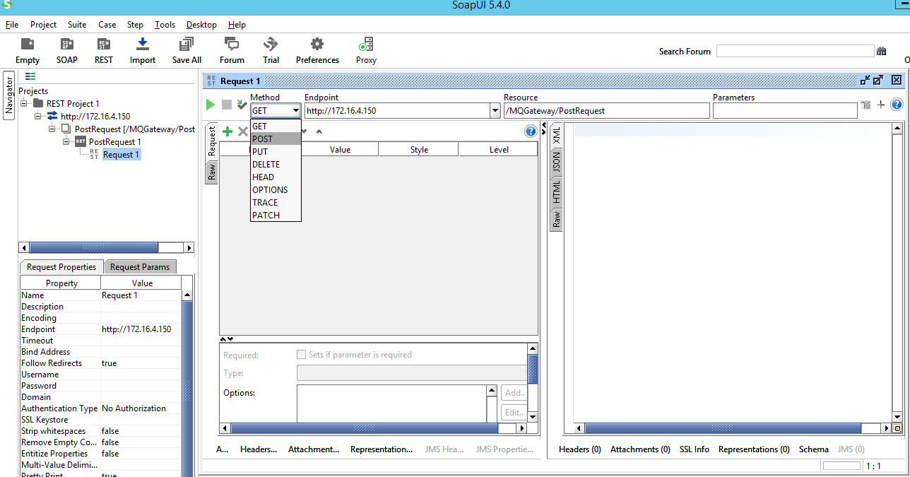

Generate WADL from SOAPUI
1. Create new REST project
2. Enter the request URL (with request method name)
3. In the Request window, change “Method” to “POST”

4. In the “Media Type”, change to “application/xml” or “application/json”
5. Paste a sample request in the request box, then click “Run”
6. Right click on the Endpoint, and choose “Show Service Viewer”
7. In the pop up window, go to tab “WADL Content”
8. Copy the content and save to a file with extension “.wadl”